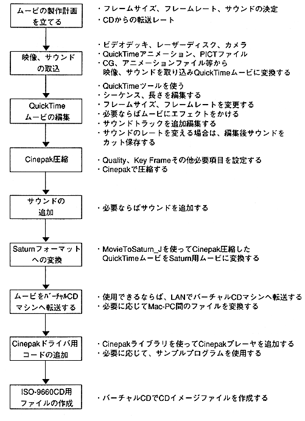

Return to previous page ｜ Return to menu ｜ Go to next page
-
2. Cinepak movie production
- The process of incorporating original audio, video, and graphic material into Saturn format depends on the original source material and the final format. The starting point of the process, the number of steps, and the necessary tools all vary depending on the equipment you have and what you want to do. This chapter provides information to help you decide which method is best.
-
2.1 Process overview
- The following figure shows the general process procedure. The actual procedure depends on the task.

Figure 2.1 Cinepak movie production process
Return to previous page ｜ Return to menu ｜ Go to next page